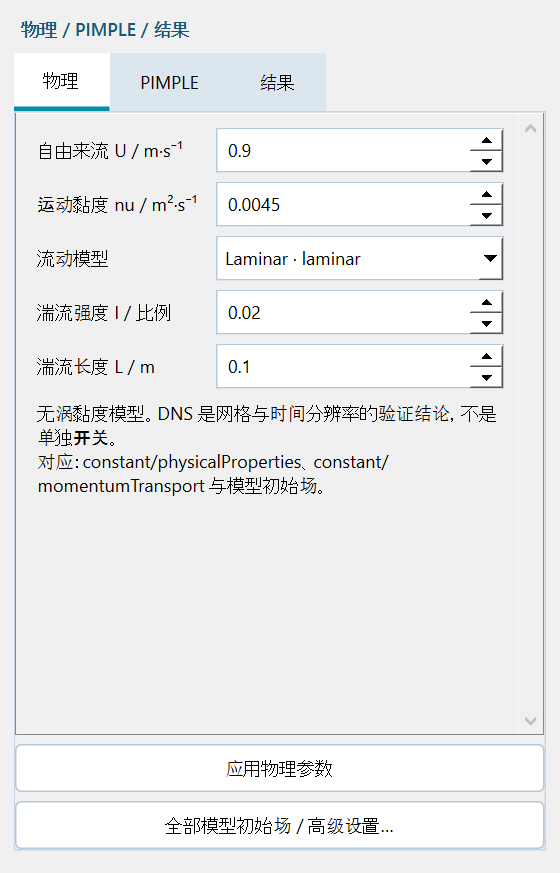
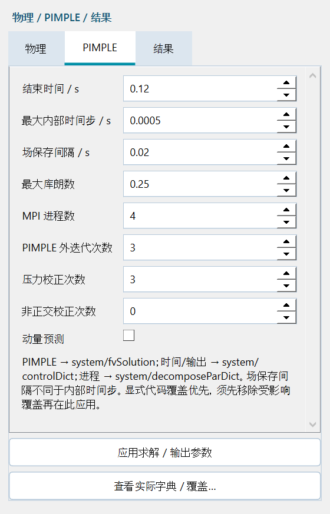
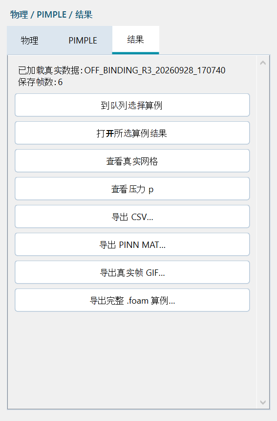

原问题与修复
最后三个摘要子项缺少动作元数据；父项单击处理也未覆盖物理、PIMPLE 或场景。原 PIMPLE 双击只切到队列，没有打开求解设置。现在父项与摘要共用可编辑属性路由，单击、双击和 Enter 均生效。
| 树入口 | 实际页面 | 实际操作 |
|---|
| 物理连续体 / laminar 摘要 | 前处理＋物理属性 | 速度、黏度、全部已列模型与湍流初值 |
| 求解器与停止条件 / PIMPLE 摘要 | PIMPLE | 耦合迭代、时间步、Co、输出间隔与 MPI 进程 |
| 场景与报告 / 网格场导出摘要 | 后处理＋结果属性 | 打开所选结果，查看网格/压力，导出 CSV/MAT/GIF/.foam |
应用与高级操作固定在滚动设置下方。未应用草稿在切页、切换语言和轮询时保留。未载入数据时明确提示并禁用导出，真实结果加载后立即刷新按钮。
物理与模型

选择模型后点击应用物理参数；高级窗口仍保留全部模型专属初始场。本次通过实际键盘/按钮将 laminar 切为 kOmegaSST，核验真实 k、omega、nut 初始场及 momentumTransport；没有删除模型。
PIMPLE 参数与真实代码

| GUI 参数 | 字典 / 关键字 | 实测值 |
|---|
| n_outer_correctors | system/fvSolution → PIMPLE/nOuterCorrectors | 3 |
| n_correctors | system/fvSolution → PIMPLE/nCorrectors | 3 |
| n_nonorthogonal_correctors | system/fvSolution → PIMPLE/nNonOrthogonalCorrectors | 0 |
| momentum_predictor | system/fvSolution → PIMPLE/momentumPredictor | no |
| delta_t | system/controlDict → deltaT, maxDeltaT | 0.0005 s |
| max_co | system/controlDict → maxCo | 0.25 |
| write_interval | system/controlDict → writeInterval | 0.02 s (edited test) |
| cores | system/decomposeParDict → numberOfSubdomains | 4 |
这些是实测测试设置，不是所有 CFD 问题的通用推荐。新增字段保留兼容默认值（2/2/1/yes）。修改 PIMPLE 使物理/求解核验失效，但保留适用的网格证据。受影响的显式字典覆盖会阻止应用并明确提示，不静默忽略。已有运行算例不受修改。
真实网格 / 场 / 导出

- 在队列选择 DONE 算例，点击网格/场/导出摘要或父项。
- 打开所选算例结果，再查看真实网格或压力。原完整视图保留速度、涡量、时间、切片、视角与色标。
- 导出按钮打开真实保存窗口。CSV 可选列与全部/当前帧；.foam 导出复制真实算例文件，空标记不等于 CFD 数据。悬停数据源标签查看完整路径。
专业测试证据
工程验收第一轮：36 个实际鼠标入口，覆盖三个流程、引导/专家模式、父项/摘要，补测双击、Enter、手动模式和隐藏/浮动属性栏。第二轮：键盘编辑、应用、实际生成代码、保存重开、非法 Co 拒绝、模型场生成、草稿保留与显式覆盖冲突。
| 算例 | 模型 | 网格 | cells / ranks | t / s | 真实帧 | max Co | 状态 |
|---|
| OFF_BINDING_R1_20260928_125014 | laminar | Structured cylinder O-grid | 5120 / 4 | 0.04 | 5 | 0.0163629 | DONE |
| OFF_BINDING_R2_20260928_125014 | laminar | Manual topology (Gmsh) | 5120 / 4 | 0.06 | 4 | 0.0100042 | DONE |
| OFF_BINDING_R3_20260928_125014 | kOmegaSST | Structured cylinder O-grid | 5120 / 4 | 0.1 | 6 | 0.0163628 | DONE |
三组本版新三维四进程计算使用修改后的 PIMPLE 设置。结果按钮修复后复用这些已完成算例做导出测试，没有重复求解未修改算例。通过实际保存窗口生成有限值 MAT/CSV 和真实帧 GIF；复制后的 .foam 独立重开，匹配 5120 单元及全部保存时间。实际驱动时间戳独立核验最多占用四个进程。
点击 / 编辑记录 · 真实流程记录 · 独立核验
0.04–0.10 s 短计算验证软件集成，不代表圆柱力已收敛或湍流精度。0.14 手动拓扑及 0.12 八轮 10 秒测试保留为历史证据，不改称 0.15 新测试。任意三维 CAD 与远程超算实际验证仍不在已核验范围。